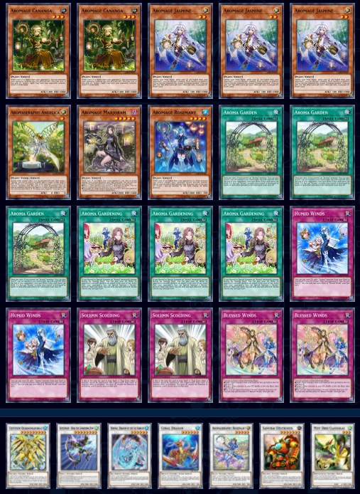

Aromages
que tanta vida pueden ganar
Habilidad : Equilibrio
precio : Muy barato
El Aromages es un deck que gana LP a lo bestia haciendolo sococantes en algunos casos y hatas un deck eterno gracias a la trampa vientos bendecidos


Habilidad : Equilibrio
precio : Muy barato
El Aromages es un deck que gana LP a lo bestia haciendolo sococantes en algunos casos y hatas un deck eterno gracias a la trampa vientos bendecidos
cuando tengas mas de 10K Lp tus aromages no podren ser destruidas en batalla
